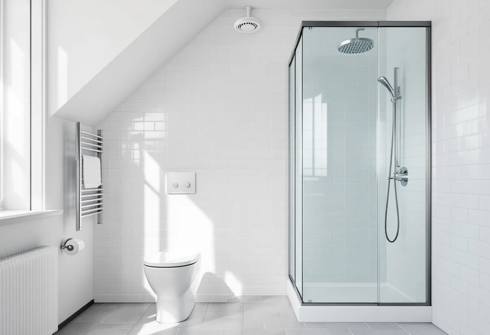

Platsbesök
Vi mäter rummet och ser var stammen och ventilationskanalen går.
I många lägenheter i Vasastan är frågan inte bara hur badrummet ska se ut utan var det ska ligga och hur stort det får bli. Då handlar det om avlopp, ventilation och väggar, och om vem som ska säga ja. Geal Entreprenad AB bygger om badrum i bostadsrätter med gratis platsbesök, skriftligt kostnadsförslag och ROT-avdraget direkt på fakturan.
När utbyggnaden kring Odenplan kom igång vid seklets början uppfördes enligt Stadsmuseets Stockholms Spår om Odenplan stora och höga hyreshus i väldiga kvarter, med namn som Gullvivan, Blåklinten och Resedan till minne av Bergianska trädgården. Gustav Vasa kyrka i kvarteret Syrenen invigdes 1906.
Vid S:t Eriksplan bebyggdes större delen av Birkastaden 1904–16, enligt texten om S:t Eriksplan. Många hus uppfördes som ren spekulation och ansågs av sin samtid som fula kasernbyggnader. På Atlas Verkstäders gamla fabriksmark – verkstaden flyttade till Saltsjö-Järla 1917 – stod hyreshusen klara i slutet av 1920-talet, och Atlasområdet beskrivs som ett av de mest tättbebyggda i Stockholm.
Bostadsrätterna dominerar. Områdesfakta för 2025 räknar 8 990 bostadsrätter av 12 579 bostäder i Västra Matteus församling och 5 707 av 8 889 i Gustav Vasa. Ett badrum här är alltså oftast en fråga för en förening.

Stockholms stad skriver på sidan om att flytta kök eller badrum att du inte behöver bygglov för det. Du kan däremot behöva göra en anmälan och invänta startbesked om flytten innebär ändring av bärande konstruktion eller brandskydd, installation eller väsentlig ändring av ventilationen eller en ny VA-stam i ett nytt schakt. Oavsett om anmälan krävs ska arbetet utföras så att plan- och bygglagens tekniska egenskapskrav uppfylls.
För bostadsrätter skriver staden att du kan behöva tillstånd från föreningen och att du ska kontakta styrelsen innan du börjar planera. Enligt bostadsrättslagen 7 kap. 7 § får du inte utan styrelsens tillstånd göra ingrepp i bärande konstruktion, installera eller ändra ledningar för avlopp, värme, gas eller vatten eller ändra ventilationen. Styrelsen får säga nej bara om åtgärden är till påtaglig skada eller olägenhet för föreningen, och den som är missnöjd kan begära att hyresnämnden prövar frågan.
Lagen räknar också med annan väsentlig förändring av lägenheten. Ett badrum som växer in i en garderob eller hall kan därför kräva tillstånd även om varken stammar eller bärande väggar berörs.
Ett badrum behöver frånluft, och i ett flerbostadshus är ventilationen en del av huset. Ventilationskanaler som tjänar fler än en lägenhet svarar föreningen för enligt bostadsrättslagen 7 kap. 12 §. Staden räknar installation eller väsentlig ändring av ventilationen, till exempel aggregat, fläkt, kanaler eller värmeväxlare som påverkar flöden eller luftkvalitet, som anmälningspliktig. Bostadsrättslagen kräver dessutom styrelsens tillstånd för installation eller ändring av anordningar för ventilation.
Ska badrummet flyttas bort från den befintliga kanalen kan det därför vara ventilationen som styr var det kan hamna. Staden rekommenderar att rådgöra tidigt med skorstensfejarmästaren, sotaren, om förutsättningarna för en ny eller ändrad ventilationskanal. Vi tar med den frågan redan i första skissen, innan styrelsen får ansökan.
Flyttas badrummet blir golvbrunnen ny. Ligger det kvar avgör brunnens ålder: enligt GVK ska en golvbrunn som är äldre än 1990 bytas för att branschreglerna ska följas, och går åldern inte att avgöra rekommenderas byte. Ett badrum som flyttas påverkar dessutom ofta hallen, köket eller ett sovrum. Om kök i lägenheter finns mer under köksrenovering, och om väggar, dörrar och listverk under snickare. Hur själva våtrummet byggs, med tätskikt och fall mot brunnen, står på sidan om badrumsrenovering.
Vi mäter rummet och ser var stammen och ventilationskanalen går.
Vi ritar var badrummet kan ligga och vad flytten innebär för avlopp och frånluft.
Underlaget lämnas till styrelsen och, om det krävs, som anmälan till staden.
Du får ett skriftligt förslag med arbete och material var för sig.
Efter tillstånd och eventuellt startbesked rivs rummet och byggs upp på nytt.
Du får intyg och underlag, och slutbesked om ärendet var anmälningspliktigt.
Rotavdraget är 30 procent av arbetskostnaden, högst 50 000 kr per person och år och högst 75 000 kr ihop med rutavdrag. Material och resor ger inget avdrag.
I en bostadsrätt gäller avdraget enligt Skatteverket bara arbete innanför lägenhetens tak, väggar och golv som du ansvarar för enligt föreningens stadgar. Kakel och klinker, duschar, badkar och handfat och att byta golvbrunn ger avdrag. Att flytta golvbrunnen, flytta eller byta avloppsrör och stambyten ger det inte. Arbete på de delar av ventilationskanalen som finns innanför bostadens tak, väggar och golv ger avdrag, men inte rengöring av ventilationen. Vi drar avdraget direkt på fakturan.
Om badrummet ligger kvar eller flyttas, hur långt det är till stam och kanal och vilka ytskikt du väljer avgör mest. Platsbesöket är gratis och kostnadsförslaget skriftligt.
Tätskikt, golvbrunn, el, VVS och intyg.
Badrumsrenovering i Stockholm →Kök i lägenhet och villa.
Köksrenovering →Väggar, dörrar och listverk.
Snickare →När en lokal blir bostad.
Byggföretag i Vasastan →Ställning, tillstånd och etablering på gatan.
Fasadrenovering i Vasastan →Storgårdskvarteren och 20-talets fönster.
Fönsterbyte i Vasastan →Fönster i Birkastadens jugendhus.
Fönsterrenovering i Vasastan →Springor, kupning och underhåll.
Golvläggare i Vasastan →Stav- och fiskbensparkett.
Golvslipning i Vasastan →Kokvrån som blir kök.
Köksrenovering i Vasastan →Snickerier, fönster och sprucket spackel.
Målare i Vasastan →Takfönster, vindar och plåt.
Plåtslagare i Vasastan →Ny tapet på gamla putsväggar.
Tapetsering i Vasastan →Hela lägenheten, med husets värden kvar.
Totalrenovering i Vasastan →